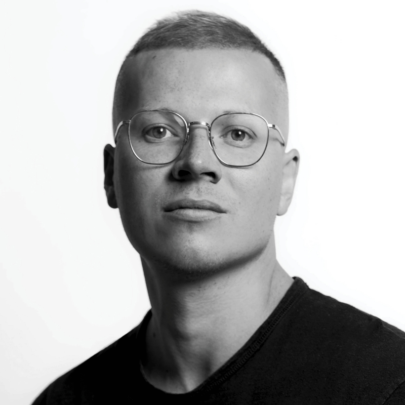

Київ, вул. Дорогожицька, 3, UNIT.City, зала UNIT.Verse в кампусі B12
1/11/2023 10:00
ЛОКАЦІЯ: UNIT.City, Київ, вул. Дорогожицька, 3, кампус B12. ЯК ДІСТАТИСЯ
Vogue UA Conference: Fashion & Business Today
Про подію
Щорічна Vogue UA Conference повертається у традиційному форматі – вперше з початку повномасштабного вторгнення. Як адаптуватися до кризи та знайти натхнення, можливості й ресурси для збереження й розвитку бізнесу? Український Vogue об’єднає представників провідних вітчизняних і світових компаній у галузі моди, краси, технологій, а також дизайнерів, підприємців, ритейлерів і креативників, аби знайти відповіді на найнагальніші запити сьогодення.
Спікери та гості конференції обговорять:
· як вивести бренд на міжнародну арену та розвивати бізнес в умовах війни – досвід дизайнерів Івана Фролова, Каті Сільченко та Юлії Пеліпас;
· як отримати грант на розвиток бізнесу в Україні та як знайти партнерів і підтримку за кордоном – Джен Сідарі, засновниця й гендиректорка Angel for Fashion, та Юлія Свириденко, перша Віцепрем’єр-міністерка – Міністерка економіки України;
· як використовувати штучний інтелект і технологічні інновації в модній індустрії;
· як побудувати сталий бізнес в умовах тотального перевиробництва.
НАШІ СПІКЕРИ
Джен Сідарі
засновниця та виконавча директорка онлайн-платформи підтримки української моди Angel for Fashion
Колишня директорка бренду Vivienne Westwood в США та керівниця фешн-платформи Zappos, разом з Андре Леоном Теллі Джен Сідарі запустила онлайн-магазин Zappos Couture. У 2020 році почала працювати бізнес-консультанткою програми «Конкурентоспроможна економіка України» організації USAID. Джен підтримує шоукейси українських дизайнерів на Тижнях моди в Нью-Йорку, Мілані та Парижі. Сьогодні вона керує мультибрендовою платформою angelforfashion.com, допомагаючи українським компаніям з міжнародними продажами.
Колишня fashion-директорка українського Vogue, Юлія Пеліпас заснувала бренд системного апсайклінгу bettter 2020 року. Після повномасштабного вторгнення трансформувала його сайт і соцмережі у медійну платформу Bettter. Given Name. Community, яка допомагає просувати представників креативної індустрії країни на міжнародному ринку. Торік у Лондоні Пеліпас отримала нагороду The Fashion Awards в категорії "Лідери змін". А цього року — премію Карла Лагерфельда у фіналі конкурсу LVMH Prize та увійшла до списку 100 людей, які змінюють модну індустрію на краще, за версією Vogue Business.
Юлія Свириденко
Перша Віцепрем’єр-міністерка — Міністерка економіки України
Економістка, Юлія Свириденко з 2021 року обіймає посаду Першої віцепрем'єрки — Міністерки економіки України. Разом із командою міністерства залучає іноземні інвестиції до України навіть в умовах війни. Під її керівництвом було запущено низку проєктів з підтримки населення та бізнесу, сприяння експорту. Юлія Свириденко опікується системними реформами економіки задля інтеграції у світові ринки, впроваджує грантові програми для малого та середнього бізнесу і підтримує розвиток української легкої промисловості.
Іван Фролов
дизайнер, креативний директор FROLOV
Іван Фролов у 2015 році заснував бренд, в якому зробив ставку на свободу самовираження та провокацію. Сміливе вбрання FROLOV вибирають найбільші світові зірки — від Бейонсе і Дуа Ліпи до Кайлі Міноуг та учасників гурту Måneskin. Увагу до бренду дизайнер вміло конвертує в допомогу своїй країні. Він підтримує ГО "Фонд Маша", що опікується дітьми, постраждалими від війни, та медичний батальйон "Госпітальєри". Цього року за активну благодійну роботу Іван Фролов став лауреатом премії Vogue Talent Prize у номінації Resilience and Social Impact.
Катерина Сільченко
Засновниця та дизайнерка бренду the COAT by Katya Silchenko
Дизайнерка Катя Сільченко заснувала бренд жіночого одягу the COAT by Katya Silchenko в 2014 році. У 2021-му вона отримала нагороду як «Найкращий дизайнер жіночого одягу» національної професійної модної премії Best Fashion Awards. Катерина однією з перших в Україні системно впровадила філософію сталого розвитку та відповідального виробництва в моді. З початку повномасштабної війни ініціювала кілька благодійних проєктів, зокрема випустила патріотичний дроп кросівок і влаштувала масштабний Shoe Market, де збирали гроші на протезування військових. Є лауреаткою премії Vogue Talent Prize: Resilience and Social Impact.
Наталія Каменська та Марія Гаврилюк
Дизайнерки, засновниці бренду Gunia Project
Наталія Каменська та Марія Гаврилюк заснували бренд Gunia Project у 2019 році. Вони створюють колекції посуду й ужиткових речей з використанням автентичних технік і народних мотивів, застосовуючи мистецький підхід до традиційного ремесла. Нещодавно дизайнерки вперше представили колекцію одягу. Бренд активно займається благодійністю. У 2023 році Gunia Project під керівництвом Наталії Каменської та Марії Гаврилюк став лауреатом премії Vogue Talent Prize: Resilience and Social Impact.
Катерина Осадча
Телеведуча
Ведучою цьогорічної конференції Vogue UA Fashion & Business Today стане відома журналістка та телеведуча Катерина Осадча. З початку повномасштабного вторгнення вона опікується пошуком цивільних, зниклих під час бойових дій та на окупованих територіях, який масштабувався у соціальний проєкт “Знайти своїх“ та ініціює впровадження нових законів і юридичних інструментів для більш ефективного розшуку та повернення людей.
Тамара Клое Легія
Старша консультантка з прогнозування трендів, WGSN
Як представниця найбільшої аналітичної платформи WGSN, що визначає майбутні тренди, Тамара допомагає з пошуком ефективних бізнес-рішень найвідомішим світовим брендам. Вона входить до команди управління операційною радою WGSN Sustainability Board, що працює над ініціативами сталого розвитку. Має освіту в сфері моди та психології Лондонського коледжу моди LCF.
Шана Чу
засновниця та виконавча директорка Tailr
Працюючи на перетині індустрій моди та технологій, Шана Чу створила B2B програмну платформу Tailr. Це інноваційне рішення дозволяє вирішити одну з найрозповсюдженіших проблем в індустрії – невідповідність розмірних сіток. Шана та її Tailr отримали нагороду як найкращий ірландський стартап та разючий раунд фінансування в розмірі 700 тисяч євро для сприяння раціоналізованому виробництву одягу.
Маргарита Грубіна
Менеджерка з розвитку бізнесу у Respeecher
Український AI стартап Respeecher займається створенням синтетичних голосів для Голлівуду та AAA-компаній. Технологію Respeecher використовують найбільші світові стримінг-платформи Netflix, HBO, Disney+, Paramount+ та Showtime. У 2021 році команда Маргарити Грубіної привезла в Україну “Еммі”, а в 2023-му - Премію Веббі, “Оскар” серед інтернет-нагород.

Веня Брикалін
головний редактор українського Vogue
Веня Брикалін був призначений головним редактором українського Vogue у травні 2023 року. На цій посаді він продовжує розвивати унікальний візуальний стиль видання та посилювати позиції бренду на міжнародній сцені. Цього року Брикалін увійшов у рейтинг найвпливовіших людей в індустрії BoF 500 за версією ресурсу Business of Fashion. В межах Vogue UA Conference він проведе паблік-ток з Ідою Петерссон, баїнг-директоркою британського універмагу Browns.
Іда Петерссон
Баїнг-директорка жіночого та чоловічого підрозділів, Browns
Іда Петерссон народилася в Швеції. Навчалась і працювала у сфері захисту прав людини, пізніше вивчала фешн-менеджмент у Лондонському коледжі моди. Працювала в Harvey Nichols та Net-à-Porter, а 2017 року очолила відділ закупівель лондонського універмагу Browns. Саме завдяки Іді Browns відкрив світу багато нових модних імен і прославився своїм свідомим кураторським підходом. Маючи багатий галузевий досвід, Іда Петерссон входить до складу журі Copenhagen’s Designers’ Nest Award та програми підтримки молодих талантів Fashion East XLNC.
Анна Карнаух
співзасновниця агенції Ланка.про
Експертка із розвитку культурних та креативних індустрій, Анна опікується напрямком креативної економіки в Британській Раді в Україні. Ланка.про, співзасновницею якої є Карнаух, - професійна ініціатива, покликана підсилювати культурну екосистему України для створення здорового та технологічного майбутнього.